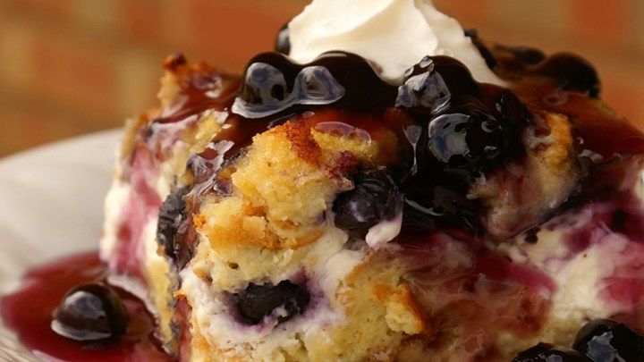
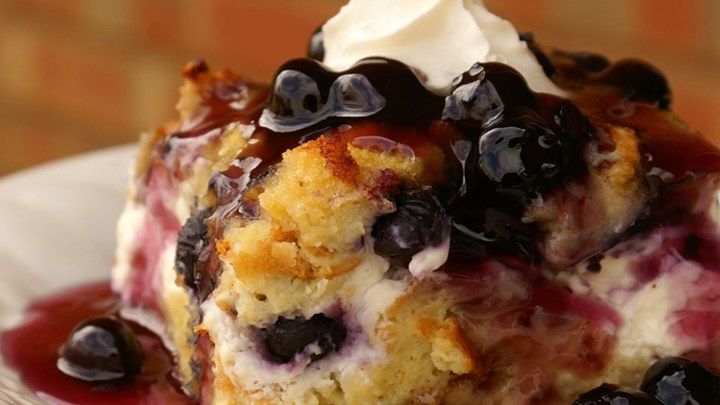

Overnight Blueberry French Toast
This is a very unique breakfast dish. Good for any holiday breakfast or brunch, it's filled with the fresh taste of blueberries, and covered with a rich blueberry sauce to make it a one of a kind
Recipe by KARAN1946
215
Ingredients
- 12 slices day-old bread, cut into 1-inch cubes
- 2 (8 ounce) packages cream cheese, cut into 1 inch cubes
- 1 cup fresh blueberries
- 12 eggs, beaten
- 2 cups milk
- 1 teaspoon vanilla extract
- 1/3 cup maple syrup
- 1 cup white sugar
- 2 tablespoons cornstarch
- 1 cup water
- 1 cup fresh blueberries
- 1 tablespoon butter
Nutritional Information
Amount per serving (10 total)
| Calories | 485 cal | 24% |
| Fat | 24.8 g | 38% |
| Carbs | 51.9 g | 17% |
| Protein | 15.1 g | 30% |
| Cholesterol | 279 mg | 93% |
| Sodium | 451 mg | 18% |
Directions
- Lightly grease a 9x13 inch baking dish. Arrange half the bread cubes in the dish, and top with cream cheese cubes. Sprinkle 1 cup blueberries over the cream cheese, and top with remaining bread cubes.
- In a large bowl, mix the eggs, milk, vanilla extract, and syrup. Pour over the bread cubes. Cover, and refrigerate overnight.
- Remove the bread cube mixture from the refrigerator about 30 minutes before baking. Preheat the oven to 350 degrees F (175 degrees C).
- Cover, and bake 30 minutes. Uncover, and continue baking 25 to 30 minutes, until center is firm and surface is lightly browned.
- In a medium saucepan, mix the sugar, cornstarch, and water. Bring to a boil. Stirring constantly, cook 3 to 4 minutes. Mix in the remaining 1 cup blueberries. Reduce heat, and simmer 10 minutes, until the blueberries burst. Stir in the butter, and pour over the baked French toast